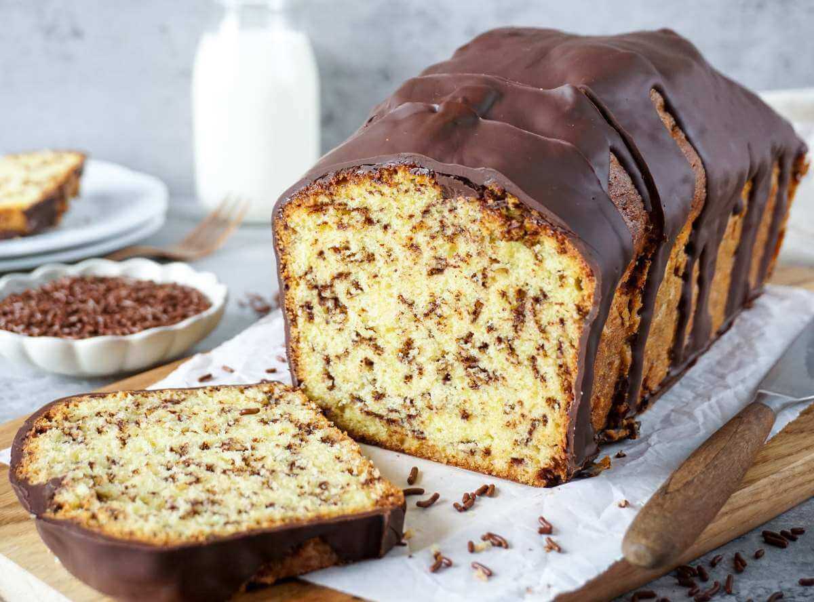

Eierlikörkuchen

Beschreibung
Saftiger Rührkuchen mit Schokoladenstreuseln, wie Opa ihn immer gemacht hat.
Zutaten
- 250 gramm Fett
- 180 gramm Zucker
- 1 Pack Vanillezucker
- 4 Eier
- 250 gramm Mehl
- 1 Pack Backpulver
- 1 Tasse Eierlikör
- Schoko-Milchstreusel
Zubereitung
- Fett, Zucker und Eier verrühren
- Mehl, Backpulver, Vanillezucker und Eierlikör hinzugeben
- Schokostreusel unter den Teig heben
- 1h auf 150°C Umluft backen
Zurück zum Index